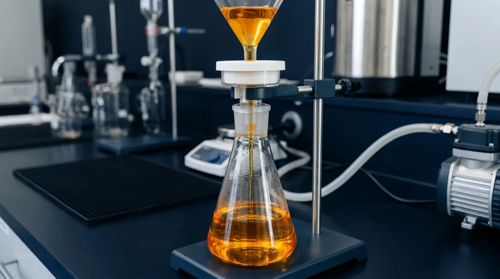

High-Speed Decanter Centrifuge
Operating continuously at 15,000 RPM, our high-shear decanter apparatus generates immense mechanical acceleration up to 100,000G. This physical force instantly separates organic ingredient emulsions into three distinct strata based on specific gravity: dense solid cellular matrices, high-density aqueous liquid essences, and hydrophobic golden lipid fractions. By isolating these layers in minutes, we eliminate the localized thermal degradation inherent to gravity reductions.

0
Operational RPM Velocity // Continuous Fractionation